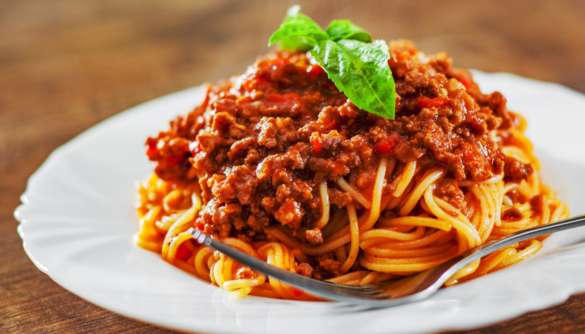

Bem vindo à 'Mesa de Família', onde ensinamos receitas para fazer junto com
o clã inteiro (desde os mais velhos aos pequenos)! Aqui esperamos que você encontre mais do que
sabor, aqui você cria momentos inesquecíveis! Pronto? Só puxar uma cadeira.
🧁Brigadeiro Tradicional🧁
INGREDIENTES
1 lata de leite condensado (395 g)
160 ml de leite (½ medida da lata de leite condensado)
1 colher (sopa) de manteiga
3 colheres (sopa) de chocolate em pó
2 xícaras (chá) de chocolate granulado
MODO DE PREPARO
Você vai precisar de 30 forminhas de brigadeiro
Com um pincel, unte um prato com um pouco de manteiga. Reserve.
Separe as forminhas umas das outras com cuidado e disponha numa travessa pequena. Reserve.
Numa panela, misture o leite e o chocolate em pó. Leve ao fogo baixo e mexa bem, até dissolver
o chocolate.
Junte o leite condensado, a manteiga e, quando ferver, calcule 15 minutos
cozinhando, sem parar de mexer, ou até aparecer o fundo da panela.
Retire a panela do fogo e transfira o brigadeiro para o prato
untado. Deixe esfriar.
Numa tigela, coloque o chocolate granulado e deixe ao lado do prato com a massa de brigadeiro.
Espalhe um pouco de manteiga na palma das mãos e, com a ajuda de
1 colher de chá, faça bolinhas de 2,5 cm. Passe as
bolinhas pela tigela com o chocolate granulado, e
nvolvendo cada uma muito bem. Em seguida,
coloque as bolinhas nas forminhas.
🧀Pão de Queijo Caseiro🧀
INGREDIENTES
1 xícara de leite
½ xícara de óleo
½ colher (sopa) rasa de sal
500g de polvilho doce
2 ovos
1 ½ xícara de queijo meia cura ralado
MODO DE PREPARO
Coloque o leite, o óleo e o sal numa leiteira.
Leve ao fogo alto e, quando levantar fervura,
despeje a mistura sobre o polvilho previamente
colocado numa vasilha.
Mexa bem com uma colher de pau, para que o polvilho
fique impregnado de líquido. Em seguida,
acrescente os ovos, um a um, sempre mexendo com a colher de pau.
Junte o queijo ralado e misture com as mãos até que a
massa não grude nas mãos. Sove a massa sobre uma
superfície enfarinhada, até que ela fique homogênea e macia.
Em seguida, enrole pequenas bolinhas na palma da mão, dispondo-as
numa assadeira retangular untada e enfarinhada. Leve para assar
em forno preaquecido a 200°C por 20 minutos.
🍝Macarrão à Bolonhesa🍝

INGREDIENTES
2 colheres (sopa) de óleo
meio quilo de carne moída
1 cebola picada
4 tomates sem pele, sem sementes e picados
1 lata de polpa de tomate
2 tabletes de MAGGI® Caldo Carne
1 xícara (chá) de água quente
1 pacote de macarrão tipo espaguete cozido
MODO DE PREPARO
1. Em uma panela, aqueça o óleo e refogue a carne até dourar.
2. Junte a cebola, os tomates e deixe refogar até murchar.
3. Acrescente a polpa de tomate e os tabletes de MAGGI Caldo, dissolvidos em água quente.
4. Deixe cozinhar por cerca de 10 minutos, ou até apurar o molho.
5. Sirva com o macarrão cozido.
🍨Sorvete Caseiro 🍨
INGREDIENTES
1 lata de leite condensado
2 latas de creme de leite
1 suco Tang da sua preferência
3 colheres de esmutab ou emulsificante de sorvete
MODO DE PREPARO
Em um liquidificador, bata o creme de leite, leite condensado e suco até que forme uma mistura homogênea.
Posteriormente, leve esta mistura para o freezer por ao menos cinco horas.
Retire do freezer e bata novamente em um liquidificador, acrescentando o emulsificante.
Leve novamente para o freezer e aguarde mais 5 horas.